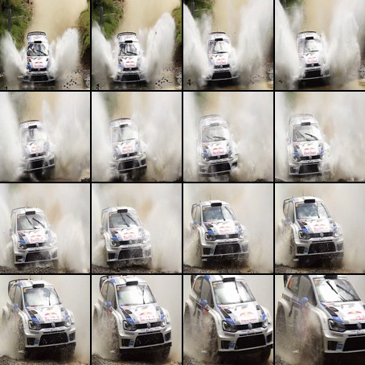
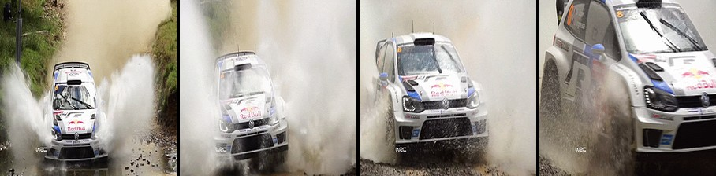

Caption Examples: Same GIFs, Three Models
Each GIF is captioned by all three architectures. CNN-LSTM processes 16 frames sequentially through BiLSTM. ViT-GPT2 captions 4 frames independently and summarizes. SmolVLM sees a 16-frame grid as one image.


Observations
- CNN-LSTM generates action-focused captions ("bobbing his head", "passing through water with speed") because BiLSTM processes the temporal frame sequence. Sometimes hallucinates details.
- ViT-GPT2 describes static appearances ("a man in a black shirt", "a woman standing next to a man") because it captions each frame independently as a photo. The summarization produces fragmented text.
- SmolVLM produces the most concise and accurate captions ("a race car is driving through a puddle") because its Idefics3 architecture natively understands multi-image temporal sequences from the 16-frame grid.
Previous Research: CNN-LSTM (Apoorva Bhatnagar, 2021)
GIF Image Descriptor - a CNN-LSTM architecture for generating descriptive texts for GIF images, deployed as a Chrome extension with an Azure Cloud API server.
Architecture
Training
Evaluation (TGIF Test)
CNN-LSTM Retrained (Browser-Deployable)
Modernized reimplementation using EfficientNet-B0 + BiLSTM + Attention, trained on 80K TGIF GIFs, exported to ONNX for in-browser inference via WASM.
Architecture
Training
Evaluation (TGIF Test)
Processing Pipeline


224x224 each
1280-dim / frame
+ Attention
Encoding
Model Load
Per-GIF Inference
Page-to-Accessible
ViT-GPT2 (VisionEncoderDecoderModel)
Vision Transformer encoder + GPT-2 decoder. Tested as base model (COCO-trained), fine-tuned on TGIF human captions, and distilled from LLaVA. ONNX-exportable architecture.
Architecture
Three Variants Tested
Evaluation (TGIF Test)
| Base | TGIF | LLaVA | |
|---|---|---|---|
| BLEU-1 | 0.338 | 0.367 | 0.323 |
| BLEU-4 | 0.058 | 0.082 | 0.047 |
| ROUGE-L | 0.316 | 0.340 | 0.264 |
| CIDEr | 0.134 | 0.145 | 0.111 |
Processing Pipeline (Base: Per-Frame)

4 separate calls
Captioning
Selection
Processing Pipeline (TGIF-Trained: 6-Frame Grid)
6 frames
1 call on grid
Captioning
Model Load
Per-GIF Inference
Page-to-Accessible
Key Finding: Distillation Failed for Grid Input
LLaVA distillation (0.323 BLEU-1) performed worse than the base model (0.338) and worse than TGIF training (0.367). The ViT encoder, designed for single 224x224 images, cannot meaningfully read tiny 128px frames within a 512x512 grid. TGIF human captions with direct training worked better because the captions are short and match the evaluation style.
SmolVLM-256M Distilled
Vision-Language Model with native multi-image understanding (Idefics3 architecture). Fine-tuned via LoRA using LLaVA-generated captions. Best caption quality but ONNX conversion blocked for browser deployment.
Architecture
Training
Evaluation (TGIF Test)
Processing Pipeline

16 frames, 512x512
+ LoRA adapter
1 forward pass
Model
Model Load
Per-GIF Inference
Page-to-Accessible
ONNX Conversion Challenge
The fine-tuned SmolVLM model cannot be deployed in the browser with correct weights. The Idefics3 architecture requires a proprietary ONNX conversion pipeline maintained by the HuggingFace team. Multiple approaches were attempted:
optimum-cli export onnx- fails: idefics3 unsupportedtorch.onnx.export- vision encoder fails due to dynamic shapes- ONNX weight patching - fused graph nodes ignore patched initializers
- Sub-model extraction (LlamaForCausalLM + SiglipVisionModel) - fails with PyTorch 2.11
A GitHub issue was filed. The base model runs in the browser (for latency benchmarking) but generates base-model captions, not the fine-tuned quality. Python inference produces correct fine-tuned captions.
Results Comparison
All models evaluated on TGIF test set using pycocoevalcap (MSCOCO library), scoring against all human references simultaneously.
| Metric | CNN-LSTM Baseline |
CNN-LSTM Retrained |
SmolVLM Distilled |
ViT-GPT2 TGIF |
ViT-GPT2 Base |
|---|---|---|---|---|---|
| BLEU-1 | 0.530 | 0.490 | 0.468 | 0.367 | 0.338 |
| BLEU-4 | -- | 0.114 | 0.129 | 0.082 | 0.058 |
| ROUGE-L | 0.390 | 0.384 | 0.345 | 0.340 | 0.316 |
| METEOR | 0.203 | 0.169 | 0.212 | -- | 0.159 |
| CIDEr | 0.309 | 0.249 | 0.375 | 0.145 | 0.134 |
| Params | -- | 16.8M | 256M | 278M | 278M |
| Browser | No | Yes (WASM) | No (ONNX blocked) | Yes (ONNX) | Yes (WebGPU) |
Understanding the Metrics
| BLEU-1 | Measures unigram (single word) precision. How many words in the generated caption appear in the reference. Higher = more word overlap. CNN-LSTM models score highest because they learned TGIF's word distribution directly. |
| BLEU-4 | Measures 4-gram precision. Requires exact 4-word sequences to match. Very strict - scores of 0.10-0.13 are typical for image captioning. SmolVLM leads here (0.129) despite lower BLEU-1, suggesting more fluent phrase generation. |
| ROUGE-L | Measures the longest common subsequence between generated and reference captions. Focuses on recall - how much of the reference is captured. CNN-LSTM models lead because their short captions match the short TGIF reference style. |
| METEOR | Uses synonyms, stemming, and paraphrases (via WordNet) beyond exact word matching. Better correlated with human judgement. SmolVLM leads (0.212) because it generates semantically accurate descriptions even when wording differs. |
| CIDEr | Designed specifically for image captioning. Uses TF-IDF weighting to reward words distinctive to a specific image (not generic words like "a" or "the"). SmolVLM leads significantly (0.375) because its multi-image understanding captures image-specific details. |
Summary: CNN-LSTM wins surface-level n-gram metrics (BLEU, ROUGE) because its output style matches TGIF references. SmolVLM wins semantic metrics (METEOR, CIDEr) because it understands image content better, even when wording differs from references.
Deployment & Latency Comparison
All three models deployed as Chrome extensions with identical architecture: offscreen document, DESCRIBE_GIF message passing, benchmark metrics, Tesseract.js OCR.
Page Load to All 10 GIFs Accessible
Excluding one-time model download. Measured on test bench with 10 GIFs.
CNN-LSTM Retrained
16 frames, EfficientNet + BiLSTM
73 MB model, loads in 399ms
ViT-GPT2
4 frames x 3.3s per-frame
900 MB model, loads in 22s
SmolVLM-256M
ONNX 3-session lock prevents parallel
500 MB model, loads in 13s
| Metric | CNN-LSTM | ViT-GPT2 | SmolVLM |
|---|---|---|---|
| Model Size | 73 MB | ~900 MB | ~500 MB |
| Model Load | 399 ms | 22,063 ms | 13,093 ms |
| Inference / GIF | 847 ms | 13,057 ms | 9,172 ms |
| 10 GIFs Total | 11.3s | 13.3s | 113.6s |
| First GIF Ready | ~3s | ~32s | ~12s |
| Processing | Parallel | Parallel | Sequential |
| Compute | WASM (CPU) | WebGPU (GPU) | WebGPU fp16 (GPU) |
| OCR | Tesseract.js | Tesseract.js | Tesseract.js |
| Fine-tuned in Browser | Yes | Yes (ONNX exportable) | No (base model only) |
Page-to-Accessible: Parallel vs Sequential Processing
The "Page-to-Accessible" time measures how long a user waits from page load until all GIFs on the page have accessibility captions. This depends on whether the model can process multiple GIFs concurrently:
| CNN-LSTM Parallel |
Uses 3 small ONNX sessions (EfficientNet, Encoder, Decoder) on WASM. All 10 GIF requests fire simultaneously and run concurrently. Total time ≈ slowest single GIF (~11s), not 10x per-GIF time. Despite 847ms inference per GIF, the total includes OCR and frame extraction overhead per GIF. |
| ViT-GPT2 Parallel |
Uses a single ONNX session via pipeline("image-to-text") on WebGPU. Multiple GIFs can queue operations on the same session without conflict. All 10 GIFs complete within ~3s of each other after the model loads (22s one-time). Excl. model load: 13.3s. |
| SmolVLM Sequential |
Uses 3 separate ONNX sessions (vision_encoder, embed_tokens, decoder_model_merged) on WebGPU. When generate() runs, it calls all 3 sessions in sequence. A second generate() call would conflict ("Session already started" error). Total time ≈ N x per-GIF time: 10 GIFs x ~11s = 113.6s. |
Why SmolVLM can't parallelize: The Idefics3 architecture splits into 3 ONNX sessions (vision encoder, token embeddings, language decoder). WebGPU's JSEP backend cannot run multiple sessions concurrently. This is an architectural limitation, not a model size issue - a 10GB single-session model could parallelize, while a 50MB three-session model cannot.
Key Findings
- CNN-LSTM is the fastest despite running on CPU (WASM). Its 16.8M params make GPU overhead unnecessary. 847ms inference vs 9-13s for transformer models.
- SmolVLM has the best semantic metrics (CIDEr 0.375, METEOR 0.212) but the worst latency (113.6s for 10 GIFs) due to sequential ONNX session lock.
- ViT-GPT2 benefits from parallel processing - despite 13s per-GIF inference, all 10 GIFs finish in 13.3s because they run concurrently.
- Model size matters more than GPU for browser deployment. The tiny CNN-LSTM on WASM outperforms 278M-param ViT-GPT2 on WebGPU.
- ONNX conversion is the deployment bottleneck. SmolVLM's Idefics3 architecture cannot be converted to ONNX, preventing browser deployment of the fine-tuned model.
- Architecture determines distillation success. LLaVA distillation improved SmolVLM (native multi-image) but degraded ViT-GPT2 (single-image encoder can't read grids).